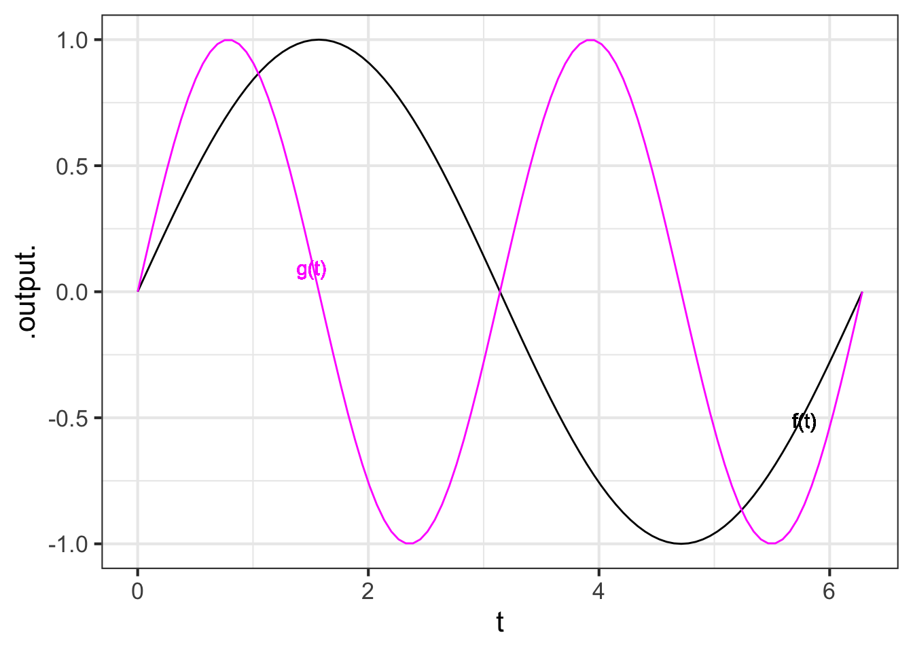
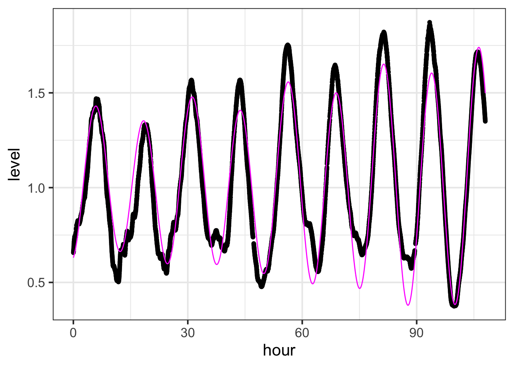
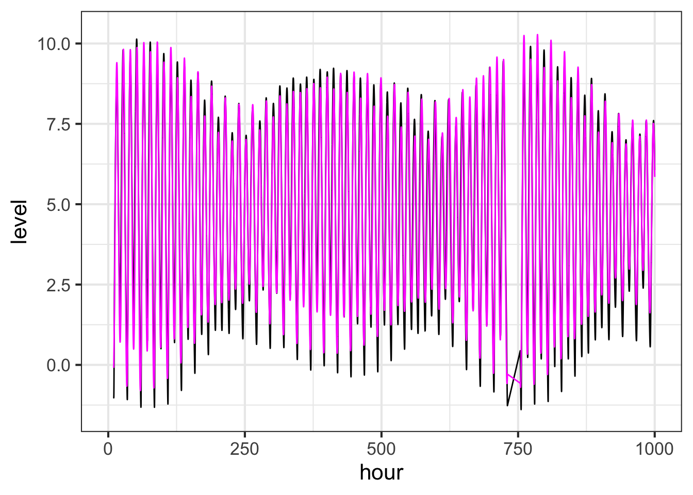
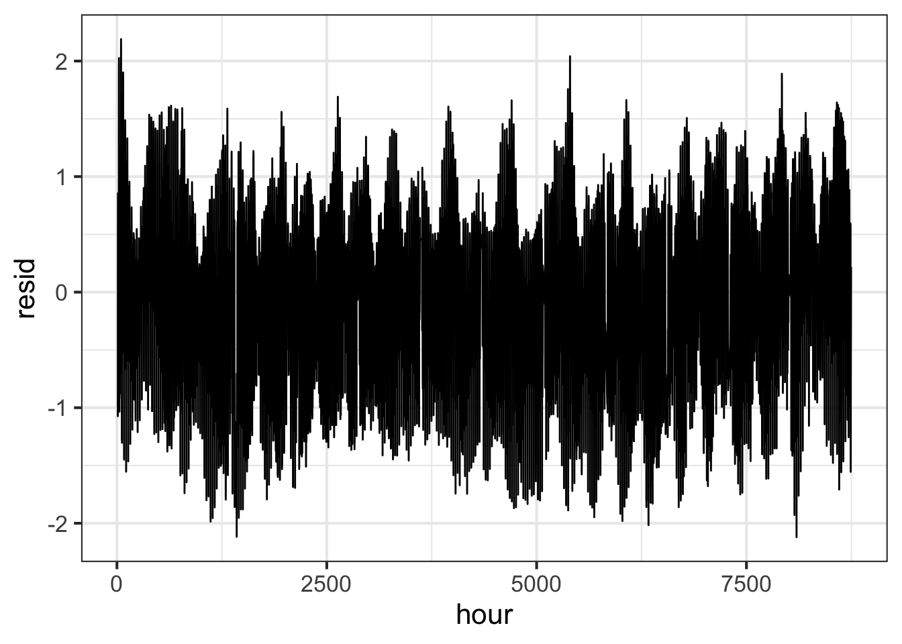
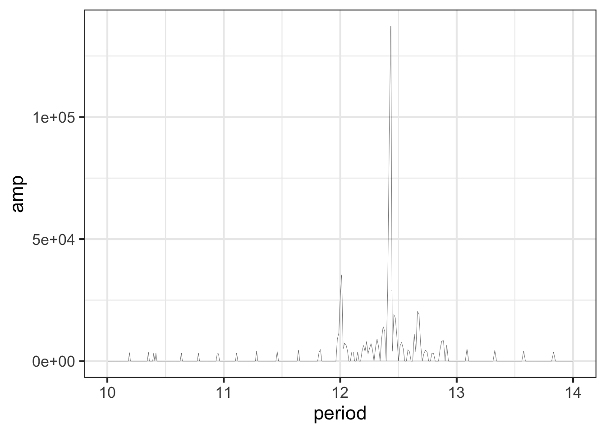

Chapter 46 Functions as vectors
This chapter is not available in the current release of MOSAIC Calculus
Time for a bit of mathematical abstraction …. We defined a vector as a column of numbers because that’s easy to visualize and to do arithmetic on. The arithmetic we needed is
- Scaling — multiplication of the vector by a scalar.
- Addition — adding two or more vectors together.
Taken together, scaling and addition give linear combination.
- Dot product — the sum of the component-wise product of two vectors.
Dot product gives us an interpretation of vectors in terms of lengths and angles between vectors.
We’ve been constructing linear combinations of functions since Block 1, for instance \(32 + 17 e^{-0.2 t}\). What about dot products between functions?
Consider two vectors, \(\vec{f}\) and \(\vec{g}\), each of which consists of a set of \(b\) components \(f_0, f_1, f_2, \ldots, f_b\) and \(g_0, g_1, g_2, \ldots, g_b\). The dot product is a sum: \[\vec{f} \bullet \vec{g} \equiv \sum_{t=0}^b f_t\,g_t\ .\] To generalize this to continuous functions of time, morph the \(\sum\) into an \(\int\): \[f(t) \bullet g(t) \equiv \int_0^b f(t)\, g(t) dt\ .\]
46.1 Functions as vectors
In Section 8.3 we looked at the use of the exponential function to describe the temperature of hot water cooling to room temperature. The exponential decreasing function is of course \(e^{-kt}\) and we can find \(k\) by estimating the half-life of exponential decay, which is about 36 minutes in the data we used. (Figure ??).
In this section, we’re going to think about functions in terms of vectors. There are huge advantages to thinking in this way, but it will take some time for you to see them clearly.
Recall the data on cooling water gave the temperature (in degrees C) versus time (in minutes). Economy on the page argues against showing all the rows of the CoolingWater data frame, but you have access to it in the SANDBOX.
| time | temp |
|---|---|
| 0 | 98.2 |
| 2 | 91.4 |
| 4 | 86.9 |
| 6 | 83.1 |
| 9 | 78.0 |
| 14 | 71.4 |
| 19 | 66.3 |
| 29 | 58.6 |
| 39 | 53.0 |
| 49 | 48.8 |
| 74 | 41.2 |
| 99 | 36.2 |
| 124 | 32.7 |
| 149 | 30.1 |
| 174 | 28.2 |
The temp column of the data frame is a set of numbers, hence interpretable as a vector. As a vector in 15 dimensions, there’s not much to be said about its direction, but the length is easy enough: take the square root of the sum of squares of the components. That comes to 251.3 degrees C. This is merely an arithmetic fact, the consequence of adding together 15 numbers. It has the dimension of temperature T, but has nothing to do with the hot-oven-like 251 C temperature.
This temp vector is playing to role of the buried treasure; it’s the destination we want to reach. What have we got to reach it with?
This is where our basic modeling function \(e^{-kt}\) comes in. By evaluating \(e^{-kt}\) at each of the values of \(t\) in the time column, we create another column, which we’ll call expkt. Knowing that the half-life is about 36 minutes, we’ll use \(k=\ln(2)/36 \approx 0.02\). At the same time, anticipating what is to come, we’ll add another column which we’ll call, following statistical practice, the intercept column and which represents the constant function (evaluated at each of the times).
CW <- CW %>%
mutate(expkt = exp(-0.02*time),
intercept = 1)| time | temp | expkt | intercept |
|---|---|---|---|
| 0 | 98.2 | 1.0000000 | 1 |
| 2 | 91.4 | 0.9607894 | 1 |
| 4 | 86.9 | 0.9231163 | 1 |
| 6 | 83.1 | 0.8869204 | 1 |
| 9 | 78.0 | 0.8352702 | 1 |
| 14 | 71.4 | 0.7557837 | 1 |
| 19 | 66.3 | 0.6838614 | 1 |
| 29 | 58.6 | 0.5598984 | 1 |
| 39 | 53.0 | 0.4584060 | 1 |
| 49 | 48.8 | 0.3753111 | 1 |
| 74 | 41.2 | 0.2276377 | 1 |
| 99 | 36.2 | 0.1380692 | 1 |
| 124 | 32.7 | 0.0837432 | 1 |
| 149 | 30.1 | 0.0507928 | 1 |
| 174 | 28.2 | 0.0308074 | 1 |
Confirm for yourself that the expkt column really does match an exponential decay with a half-life of about 36 minutes. You can see that at time zero the value of expkt, just as expected for an exponential. At time 36, somewhere between the rows for times 29 and 39, the value is about 0.5. At time 72—two half-lives after the start—the value should be 0.25, closely matching the recorded temperature at time 74.
The two vectors expkt and intercept, like any two (non-aligned) vectors, span a planar subspace. Since expkt and intercept are embedded in a 15-dimensional space—this is just saying that there are 15 rows in the data frame—the plane is a subspace of the 15-dimensional space. This statement can seem hopelessly abstract, so let’s try to give a more concrete visualization. For the visualization, we’ll move onto the familiar ground of a graph of temperature versus time.
In the domain of temperature vs time, each of the linear combinations \(\alpha\)expkt\(\ + \beta\)intercept, appears as a set of 15 dots. Figure 46.1 shows three such sets of 15 does in three different colors, along with the 15 points of the actual temperature data. To show more than the three sets of dots would be visually confusing. Instead, we’ll add to the graph functions of the form \(\alpha\, e^{-0.02 t} + \beta\, 1\).

Figure 46.1: Some of the possible linear combinations of the vectors expkt and intercept. Each combination is a set of 15 dots, but many of them are shown here as continuous functions that would connect the dots for that particular linear combination.
We we to plot all the linear combinations of expkt and intercept, the graphics frame would be completely covered with ink. But each individual vector produced by a linear combination will look much of a kind with the ten shown here.
The functions shown in Figure 46.1 all inhabit the two-dimensional subspace spanned by expkt and intercept. But there is a lot more to the 15 dimensional space. What do functions look like that inhabit the space outside of the two-dimensional expkt&intercept subspace? Figure 46.2 shows a handful of them. Each is different in kind from the functions shown in Figure 46.1.

Figure 46.2: A handful of the vectors in the 15-dimensional space outside of the 2-dimensional expkt&intercept subspace.
There are a lot of crazy-looking functions out there in 15-dimensional space!
Look back at Figure 46.1 and focus your attention on the function drawn in black. That function is a reasonable match to the data (plotted as black dots). The question we face now is how to find such a function by searching through a 15-dimensional space. That’s the task we take on in the next chapter.
It’s pretty easy to visualize the length of a vector and the arithmetic is straightforward even in n-dimensional space. For a vector \(\vec{v}\) with components \[\vec{v} \equiv \left[\strut \begin{array}{c}v_1\\v_2\\\vdots\\v_n\end{array}\right]\] the length is \(\sqrt{\strut v_1^2 + v_2^2 + \cdots + v_n^2}\). Similarly, the dot product between \(\vec{v}\) and \(\vec{w}\) is \(\vec{v} \cdot \vec{w} \equiv v_1 w_1 + v_2 w_2 + \cdots + v_n w_n\). In terms of the dot product, the vector length is \(\sqrt{\strut\vec{v} \cdot \vec{v}}\). And by combining the dot products, we can calculate the angle between two vectors: \[\cos(\theta_{v,w}) = \frac{\vec{v}\cdot\vec{w}}{\sqrt{\strut (\vec{v}\cdot\vec{v})\ (\vec{w}\cdot\vec{w}})}\]
As you know, a vector has two properties: length and direction. Both of these can be calculated using the dot product.
This suggests a way to consider other mathematical objects, such as functions, as vectors. All we need is a reasonable definition for a dot product. Suppose we have two functions, \(f(t)\) and \(g(t)\) defined on some domain, say \(0 < t < 2\pi\). A dot product multiplies the objects together and accumulates the products. When the vectors are sets of numbers, the accumulation is to add up component-by-component products. By analogy, to take the dot product of \(f(t)\) and \(g(t)\) over the domain, we can do an integral: \[f() \cdot g() \equiv \int_0^{2\pi} f(t) g(t) dt\ .\]
To illustrate, consider these two functions: \(f(t) \equiv \sin(t)\) and \(g(t) \equiv \sin(2 t)\), plotted below.
 How “long” are \(f(t)\) and \(g(t)\)? `
Integrate(sin(t) * sin(t) ~ t, domain(t = 0:(2 * pi))) %>% sqrt()
\(1.7725\)
Integrate(sin(2 * t) * sin(2 * t) ~ t, domain(t = 0:(2 * pi))) %>% sqrt()
\(1.7725\)
They are both the same “length”, which you might recognize as \(\sqrt{\strut\pi}\).
What’s the cosine of the angle between them?
Integrate(sin(t) * sin(2 * t) ~ t, domain(t = 0:(2 * pi)))/pi
\(0\)
The cosine of the angle is zero—1.3e-16 is just a round-off error. That means that the functions \(\sin(t)\) and \(\sin(2t)\) are orthogonal on the domain \(0 < t < 2\pi\).
Example 46.1 From Talyor to Lagrange
In Chapter 26 we met a method introduced by Brook Taylor (1685–1731) to construct a polynomial of order-\(n\) that approximates any smooth function \(f(x)\) close enough to some center \(x_0\). The method made use of the ability to differentiate \(f(x)\) at \(x_0\) and produced the general formula: \[f(x) \approx f(x_0) + \frac{f'(x_0)}{1} \left[x-x_0\right] + \frac{f''(x_0)}{2!} \left[x-x_0\right]^2 + \frac{f'''(x_0)}{3!} \left[x-x_0\right]^3 + \cdots + \frac{f^{(n)}(x_0)}{n!} \left[x-x_0\right]^n\] where \(f'(x_0) \equiv \partial_x f(x)\left.{\Large\strut}\right|_{x=x_0}\) and so on.
Using polynomials as approximating functions has been an important theme in mathematics history. Brook Taylor was neither the first nor the last to take on the problem.
In 1795, Joseph-Louis Lagrange (1736 – 1813) published another method for constructing an approximating polynomial of order \(n\). Whereas the Taylor polynomial builds the polynomial that exactly matches the first \(n\) derivatives at the center point \(x_0\), the Lagrange polynomial has a different objective: to match exactly the values of the target function \(f(x)\) at a set of knots (input values) \(x_0\), \(x_1\), \(x_2\), \(\ldots, x_n\). Figure 46.3 shows the situation with the knots shown as orange dots.
## Warning: Removed 38 row(s) containing missing values (geom_path).## Warning: Removed 8 row(s) containing missing values (geom_path).Figure 46.3: The Lagrange polynomial of order \(n\) is arranged to pass exactly through \(n+1\) points on the graph of a function \(f(x)\).
The Lagrange polynomial is constructed of a linear combinations of functions, one for each of the knots. In the example of Figure 46.3, there are 6 knots, hence six functions being combined. For knot 2, for instance, has coordinates \(\left(\strut x_2, f(x_2)\right)\) and the corresponding function is:
\[p_2(x) = \frac{(x-x_1)}{(x_2 -x_1)}\left[\strut\cdot\right]\frac{(x-x_3)(x-x_4)(x-x_5)(x-x_6)}{(x_2 -x_3)(x_2 -x_4)(x_2 -x_5)(x_2 -x_6)}\] The gap indicated by \(\left[\strut\cdot\right]\) marks where a term being excluded. For \(p_2(x)\) that excluded term is \(\frac{(x-x_2)}{(x_2 - x_2)}\). The various functions \(p_1(x)\), \(p_2(x)\), \(p_3(x)\) and so on each leave out an analogous term.
Three important facts to notice about these ingenious polynomial functions:
- They all have the same polynomial order. For \(k\) knots, the order is \(k-1\).
- Evaluated at \(x_i\), the value of \(p_i(x_i) = 1\). For instance, \(p_2(x_2) = 1\).
- Evaluated at \(x_j\), where \(j\neq i\), the value of \(p_j(x_i) = 0\). For example, \(p_2(x_3) = 0\).
The overall polynomial will be the linear combination \[p(x) = y_1\, p_1(x) + y_2\, p_2(x) + \cdots + y_k\, p_k(x)\ .\] Can you see why?
46.2 Time and tide
Periodicities from https://tidesandcurrents.noaa.gov/harcon.html?id=8451552&type=
hour <- with(RI_tide, hour)
b <- with(RI_tide, level)
sin1 <- sin(2*pi*hour/12.41)
cos1 <- cos(2*pi*hour/12.41)
sin2 <- sin(2*pi*hour/23.94)
cos2 <- cos(2*pi*hour/23.94)
sin3 <- sin(2*pi*hour/12)
cos3 <- cos(2*pi*hour/12)
sin4 <- sin(2*pi*hour/12.66)
cos4 <- cos(2*pi*hour/12.66)
A <- cbind(1, sin1, cos1, sin2, cos2, sin3, cos3, sin4, cos4)
mod1 <- b %onto% cbind(1, sin1, cos1)
mod2 <- b %onto% cbind(1, sin1, cos1, sin2, cos2)
x <- qr.solve(A, b)
mod3 <- A %*% x
gf_point(level ~ hour, data = RI_tide) %>%
gf_line(mod3 ~ hour, color="magenta")
Anchorage, AK
Components: - M2 12.42 hours - S2 12 hours - N2 12.658 hours - K1 23.935 hours
hour <- with(Anchorage_tide, hour)
b <- with(Anchorage_tide, level)
sin1 <- sin(2*pi*hour/12.42)
cos1 <- cos(2*pi*hour/12.42)
sin2 <- sin(2*pi*hour/23.935)
cos2 <- cos(2*pi*hour/23.935)
sin3 <- sin(2*pi*hour/12)
cos3 <- cos(2*pi*hour/12)
sin4 <- sin(2*pi*hour/12.658)
cos4 <- cos(2*pi*hour/12.658)
A <- cbind(1, sin1, cos1, sin2, cos2, sin3, cos3, sin4, cos4)
mod1 <- b %onto% cbind(1, sin1, cos1)
mod2 <- b %onto% cbind(1, sin1, cos1, sin2, cos2)
x <- qr.solve(A, b)
mod3 <- A %*% x
resid <- b - mod3
gf_line(level ~ hour, data = Anchorage_tide) %>%
gf_line(mod3 ~ hour, color="magenta") %>%
gf_lims(x = c(0,1000))## Warning: Removed 75114 row(s) containing missing values (geom_path).
## Removed 75114 row(s) containing missing values (geom_path).
gf_line(resid ~ hour) 
46.3 Fourier transform
# Fill in the missing data
Raw <- Anchorage_tide %>% select(hour, level) %>%
mutate(hour = round(hour, 1))
Even <- tibble(hour=seq(min(Raw$hour), max(Raw$hour), by=0.1))
Both <- Even %>% full_join(Raw)## Joining, by = "hour"# fill in the missing data
Fix1 <- Both %>%
mutate(level = ifelse(is.na(level), lag(level), level)) %>%
mutate(level = ifelse(is.na(level), lag(level), level)) %>%
mutate(level = ifelse(is.na(level), lag(level), level)) %>%
mutate(level = ifelse(is.na(level), lag(level), level)) %>%
mutate(level = ifelse(is.na(level), lag(level), level)) %>%
# Fill in a constant value for the missing days
mutate(level = ifelse(is.na(level), 4.867, level))
FFT <- abs(fft(Fix1$level))
# bin 974 is 1 per day
FFT2 <-
tibble(freq=2*(1:10000)/974, amp=FFT[2:10001]) %>%
mutate(period = 24/freq) %>%
mutate(amp = ifelse(amp < .3e4, 0, amp)) %>%
mutate(speed = 360/period)
gf_line(amp ~ period, size=.1,data = FFT2 %>% filter(period<100)) %>% gf_lims(x=c(10, 14))## Warning: Removed 9550 row(s) containing missing values (geom_path).